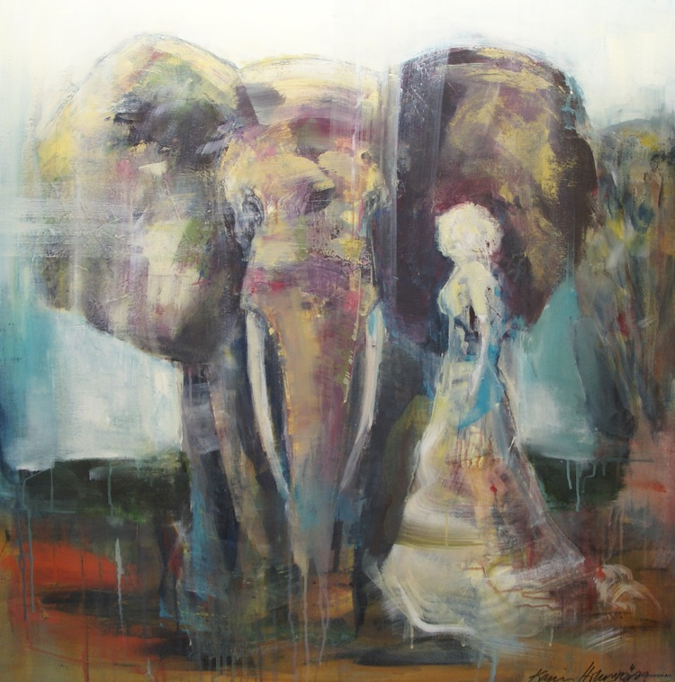

Frank Olsson
Boende och verksam i Stockholm och i Frankrike. Arbetar med måleri, skulpterar i keramik, brons, aluminium, glas, betong och silver. Läs och se mer på: frank2day.com

Karin Holmström
Karin har alltid haft en stark passion för det kreativa uttrycket. Konsten och måleriet spelar en stor roll i hennes liv, Lager på lager växer en tavla sakta fram. Med färger i olja och akryl skapas alster på stadsmotiv, hotade djur och starka kvinnor. Karin hämtar inspiration från livet och omgivningen och det som sker inom oss. Läs och se mer på: karinholmstromart.se
Marie Almqvist
Marie är en både intuitiv och medveten målare. Hennes bilder berättar om livets paradoxer. Maries bilder är oljemålningar målade i många lager ofta i färgerna gult, rött och blått. Ibland upp till 30 lager. Det kan ta flera år att färdigställa en tavla. Trappan är ett återkommande motiv i hennes målningar. Marie har ställt ut sina verk i ett flertal gallerier i Sverige, samt i Spanien, Holland, Ryssland, Canada och USA.
Lars Tunebo
Född 1962 i Lysekil. Bor och är verksam i Göteborg. Han är autodidakt. I slutet på 1980-talet började Tunebo arbeta med det tredimensionella. Han arbetar mycket med färger och skarpa kontraster.